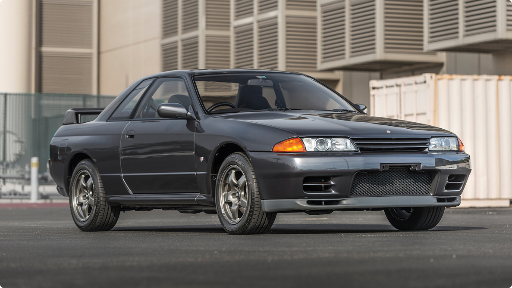
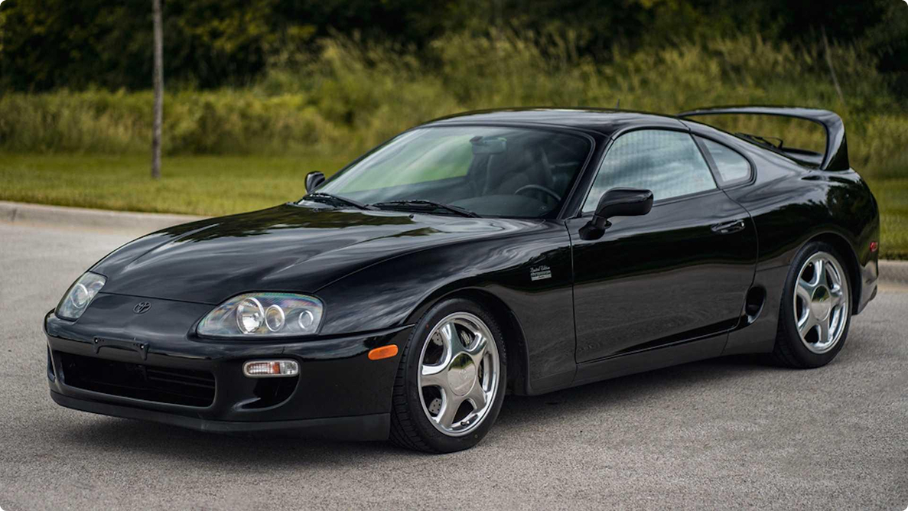
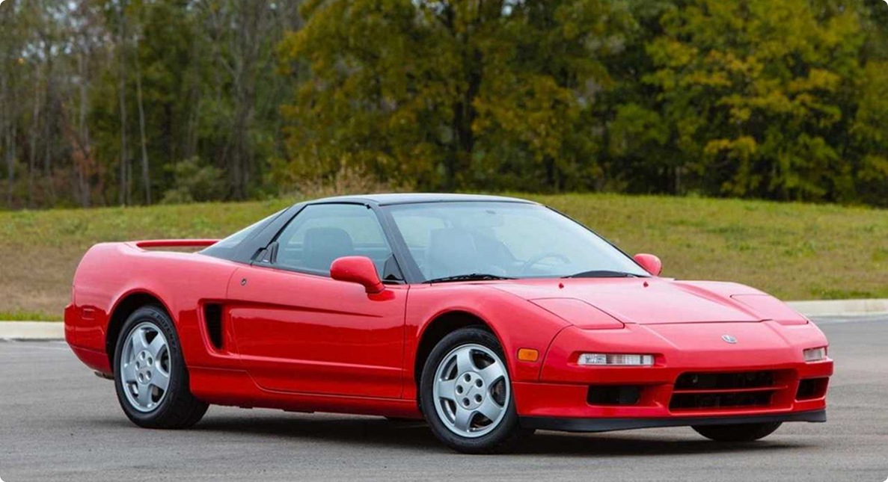

Featured JDM Cars
Step into our gallery showcasing the most iconic Japanese sports cars of all time. From sleek silhouettes to powerful engines, each image captures the spirit and legacy of these legendary machines that have defined an era of automotive excellence.
Timeless legends from the golden era of Japanese motorsports.
Nissan Skyline GT-R R32
The original Godzilla, the 1989 Nissan Skyline GT-R R32, revolutionized drifting and track racing with its 2.6L twin-turbo RB26DETT engine producing 276 hp. Known as 'Godzilla' for its unrivaled dominance, it featured active torque split all-wheel-drive and became a cultural icon in the JDM scene, paving the way for modern high-performance vehicles worldwide.
Learn More.Toyota Supra MK4
The 1993 Toyota Supra MK4 (A80), often called Castrol or Castrol Twin Turbo, epitomizes 90s JDM excellence with its 2JZ-GTE twin-turbo straight-six engine delivering 276 hp stock. This iconic coupe featured a seamless 4.10 final drive, multi-piece brake rotors, and aggressive styling, making it the ultimate drift car and a staple in Fast & Furious culture.
Learn More.Honda NSX
Launched in 1990, Honda's original NSX (New Sportscar eXperimental) redefined supercar boundaries with its mid-mounted 3.0L V6 engine, all-aluminum chassis, and ultra-lightweight construction. Pioneering variable valve timing and tiptronic transmission, it offered Ferrari-like performance at Honda affordability, earning acclaim as 'the world's best sports car' in its time.
Learn More.